무선설비기사 (2005-08-07 기출문제)
1과목: 디지털 전자회로
1. 시프트 레지스터에서 오른쪽으로 비트 이동을 할 때 일어나는 현상으로 맞는 것은?
- 2로 나눈 것과 같은 현상이 나타난다.
- 2를 곱한 것과 같은 현상이 나타난다.
- 4를 곱한 것과 같은 현상이 나타난다.
- 4를 나눈 것과 같은 현상이 나타난다.
(정답률: 알수없음)

2. 궤환증폭기의 특성 중 옳게 기술한 것은?
- 전압직렬 궤환회로에서는 입력저항은 궤환 회로가 없을 때의 입력저항보다크다.
- 전류직렬 궤환회로에서는 입력저항은 궤환 회로가 없을 때의 입력저항보다적다.
- 전류병렬 궤환회로에서는 입력저항은 궤환 회로가 없을 때의 입력저항보다 크다.
- 전압병렬 궤환회로에서는 입력저항은 궤환 회로가 없을 때 입력저항과 같다.
(정답률: 알수없음)
3. 단일접합 트랜지스터(UJT)를 사용하여 그림과 같은 회로를 구서하였다. E점에 나타나는 파형은?
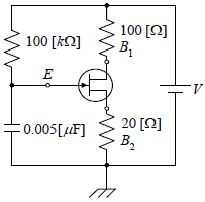
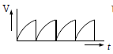
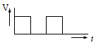
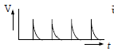
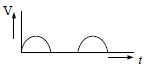
(정답률: 알수없음)
4. 다음 회로는 무슨 카운터인가?
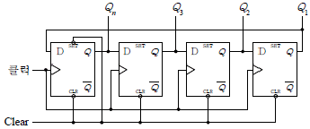
- Binary Counter
- Ring Counter
- BCD Counter
- Up/down counter
(정답률: 알수없음)
5. 다음중 Access time이 가장 빠른 기억장치는?
- Magnetic drum
- Static RAM
- Magnetic disk
- Magnetic tape
(정답률: 알수없음)
6. 그림과 같은 교류적 등가회로로 표시되는 발진회로의 발진 주파수는?
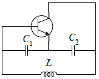
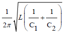
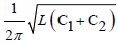
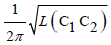
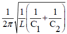
(정답률: 알수없음)
7. 다음 논리식을 간단히 하면?
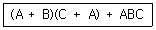
- BC
- 1
- A+BC
- A+B+C
(정답률: 알수없음)
8. 반송주파수 700[kHz]를 정현파 100[Hz]~10[kHz]의 신호파로 진폭변조하였을 때 점유주파수 대역폭은?
- 100[Hz]
- 5[kHz]
- 10[kHz]
- 20[kHz]
(정답률: 알수없음)
9. 그림과 같은 논리회로의 출력 D는?
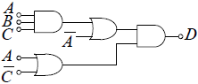
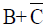
- AㆍBㆍC
- AㆍB+BㆍC
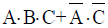
(정답률: 알수없음)
10. 전류이득은 약 1이고. 전압이득과 출력 임피던스가 높은 증폭기는?
- 에미터 접지 증폭기
- 콜렉터 접지 증폭기
- 베이스 접지 증폭기
- 모든 트랜지스터 증폭기
(정답률: 알수없음)
11. 그림과 같은 회로의 동작에 관한 설명으로 틀린것은?
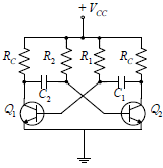
- 발진 주파수는 부하저항 (RL)과 관계가 없다.
- 비안정 멀티바이브레이터이다.
- C1=C2=C, R1=R2=R일 때 출력파의 주기는 4RC가 된다.
- 콜렉터의 출력파형은 구형파를 얻을 수 있다.
(정답률: 알수없음)
12. 그림의 연산 증폭기 회로에서 R4저항의 사용 목적은?
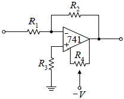
- 입력 바이어스 전류보상
- 부궤한
- 입력 오프셋 전압 보상
- 위상 지연보상
(정답률: 알수없음)
13. 그림에서 D1, D2는 5[V]제너(Zener) 다이오드이다. 부하전압 VL은 다음 어느 범위에 있겠는가? (단, Vs=10 sin(ωt+θ)[V] 이다.
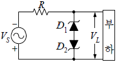
- VL≤5[V]
- VL≥5[V]
- -5[V]≤VL≤5[V]
- VL≤-5[V]또는VL≥5[V]
(정답률: 알수없음)
14. 자려발진기의 주파수 안정도에 미치는 영향과 대책에 대해 잘못 설명된 것은?
- 발진회로의 저항의 크기는 실효 Q에 영향을 주어 주파수가 변하므로 저항을 최소화 한다.
- 발진회로에 접속된 부하의 변동은 실효임피던스가 변하므로 그 접속을 소결합한다.
- 발진기의 전원전압이 변하면 FET 및 트랜지스터의 동작점이 변하여 주파수가 불안정 할 수 있다.
- 발진회로의 주위온도가 공진회로의 L, C값의 변화를 초래하므로 주파수 변동을 일으킨다.
(정답률: 알수없음)
15. 그림과 같은 플립플롭(flip-flop) 회로를 3개 직렬 접속한 후 입력에 1000[Hz]의 펄스를 가했다면 마지막 단 플립플롭(flip-flop)에 나타나는 신호의 주파수는 몇 [Hz]인가?
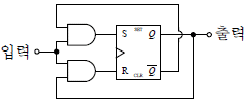
- 125
- 250
- 750
- 4000
(정답률: 알수없음)
16. 그림의 NOR 게이트 단안정 멀티바이브레이터 회로에서 R=100[㏀], C=0.47[μF] 이면 대략 출력펄스의 폭[ms]은?
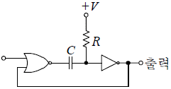
- 32.9
- 16.3
- 8.15
- 65.2
(정답률: 알수없음)
17. 이득 60[dB]의 저주파 전압증폭기가 10[%]의 왜율을 가지고 있을 때 이것을 0.1[%] 이내로 하는 방식 중 옳은 것은?
- 궤환율이 약 20[dB]의 부궤환을 걸어준다.
- 궤환율이 약 20[dB]의 정궤환을 걸어준다.
- 증폭도를 10[dB] 낮게 한다.
- 전압변동률을 1/10로 낮게 한다.
(정답률: 알수없음)
18. 다음 Karnaugh-map을 논리식으로 간략화한 결과식은?
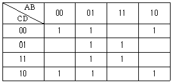
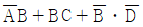
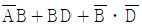
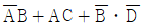
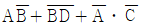
(정답률: 알수없음)
19. FET에 대한 3정수 관계가 옳은 것은?
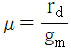
- μ=gmrd
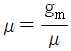
- μ=gdrd
(정답률: 알수없음)
20. A와 B, C와 D를 각각의 입력으로 하는 두 개의 개방 콜렉터형 2입력 NAND 게이트의 두 출력을 직접 연결하면 출력에 나타나는 결과는?
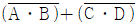
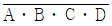
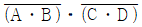
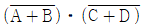
(정답률: 알수없음)
2과목: 무선통신 기기
21. 무선 송신기가 20[MHz]의 크리스털 발진기와 주파수 체배 계수가 2, 3, 3인 주파수 체배기를 사용한다. 송신기의 출력 주파수 범위를 계산하면 다음 중 어느 것인가? (단, 크리스털의 안정도는 ±200[ppm]이다.)
- 120[MHz]±1.296[MHz]
- 120[MHz]±0.024[MHz]
- 360[MHz]±8.642[MHz]
- 360[MHz]±1.296[MHz]
(정답률: 알수없음)
22. PLL 주파수 합성기의 기본구성 요소와 거리가 먼 것은?
- 전압제어발진기
- 주파수 변별기
- 저역통과 필터
- 위상검출기
(정답률: 알수없음)
23. PM파로서 등가적인 FM파를 얻기 위하여 위상변조기 전단에 사용하는 회로는?
- 프리엠파시스 회로
- 전치보상 회로
- IDC 회로
- AFC 회로
(정답률: 알수없음)
24. 다음 설명 중 FM 수신기의 스켈치(SQUELCH)회로의 설명이 맞지 않는 것은?
- 수신 신호가 약하거나 없을 때 잡음 출력이 커지는 것을 방지한다.
- 잡음이 커지면 자동적으로 가청주파 증폭기 기능을 정지한다.
- 잡음 증폭과 잡음 정류 기능을 갖추고 있다.
- 수신기 감도를 향상시켜 준다.
(정답률: 알수없음)
25. 다음 중 Q메터로 측정이 가능한 것은?
- 공진회로의 공진주파수 측정
- 코일의 전계강도 측정
- 코일의 분포용량 측정
- 증폭회로의 임피던스 측정
(정답률: 알수없음)
26. 축전지 극판은 여러 가지 사유로 극판의 만곡이 일어난다. 다음 중 관계가 먼 것은?
- 백색 황산연이 생성될 때
- 과충전 및 과방전
- 45℃ 이상의 고온으로 사용할 때
- 묽은 황산(희류산)의 비중이 너무 높을 때
(정답률: 알수없음)
27. 하틀리(Hartley)형 발진회로에서 콜렉터(Collector) 와 에미터(Emitter)간의 리액턴스(reactance)는 어떻게 되어야 하는가?
- 용량성
- 유도성
- 저항성
- 유도성 또는 용량성
(정답률: 알수없음)
28. AM 수신기의 종합 특성 중 신호파와 방해파의 근접도에 따라 영항을 가장 많이 받는 것은?
- 감도
- 선택도
- 충실도
- 안정도
(정답률: 알수없음)
29. 최고 주파수가 4[kHz]인 신호파를 펄스변조할 경우 표본화 주파수의 최저는 얼마로 하면 되는 가?
- 2[kHz]
- 4[kHz]
- 6[kHz]
- 8[kHz]
(정답률: 알수없음)
30. 위성통신에서 사용되는 OBP(On Board Processing) 기술을 설명한 것은?
- 위성의 빔 각도를 자동 조절시켜주는 기술
- 위성의 빔 커버리지를 자동으로 조절해 주는 기술
- 위성에서 복사되는 빔을 한꺼번에 처리하는 기술
- 위성을 교환기와 같은 기능을 제공하게 하는 기술
(정답률: 알수없음)
31. 직류전원장치에서 평활회로에 이용되는 필터는?
- 저역필터
- 고역필터
- 대역필터
- 대역소거필터
(정답률: 알수없음)
32. 다음 중 스펙트럼 확산 변조의 특징이 아닌 것은?
- 제3자가 수신하기 쉽다.
- 비화성을 유지할 수 있다.
- 광대역 전송로가 필요하다
- 혼신 방해에 대한 영향이 적다.
(정답률: 알수없음)
33. 자동 주파수 제어기에 대한 설명 중 잘못된 것은?
- 발진 주파수를 자동적으로 조정하여 항상 일정 주파수로 유지시키는 것이다.
- 기준 주파수와의 비교 발진기를 항온조에 수용한다.
- 송신기와 수신기 어느 장치에도 사용된다.
- 자동이득 제어기능을 갖고 있다.
(정답률: 알수없음)
34. 다음 중 무선 수신기에 고주파 증폭기를 사용하는 목적이 아닌 것은?
- 신호대 잡음비를 개선한다.
- 페이딩을 방지한다.
- 수신기 이득을 중대시킨다.
- 선택도를 개선한다.
(정답률: 알수없음)
35. 페이딩에 대처하기 위한 방식 중 틀린 것은?
- 암스트롱 변조방식
- 주파수 도약방식
- 직접 확산 방식의 대역 확산 통신 방식
- 적응 등화기 방법
(정답률: 알수없음)
36. 다음 중 스펙트럼 확산(Spread spectrum)벼조 방식의 종류가 아닌 것은?
- indirect spread
- frequency hoppin
- time hopping
- chirp
(정답률: 알수없음)
37. C급 전력 증폭기의 출력이 100[W], 콜렉터 효률이 70[%], 공진회의 Q가 무부하시 200, 부하시에 20일 때 콜렉터 출력은 얼마인가?
- 70[W]
- 90[W]
- 111[W]
- 143[W]
(정답률: 알수없음)
38. 무선 송신기의 송신 주파수 변동을 감소시키기 위한 대책이 아닌 것은?
- 주위 온도의 영향을 감소시킨다.
- 부하 변동의 영향을 감소시킨다.
- 전원의 안정도를 높인다.
- 발진기의 동조 회로 Q가 낮은 부품을 사용한다.
(정답률: 알수없음)
39. 고주파 증폭기 이득이 22[dB], 중간 주파 증폭기 이득이 61[dB]인 슈퍼헤테로다인 수신기 입력에 전압 20[μV] 인 고주파 전압을 걸었을 때 검파기 입력에서 0.2[V] 전압의 파를 얻었다면 주파수 변환기의 이득은?
- -1[dB]
- -2[dB]
- -3[dB]
- -4[dB]
(정답률: 알수없음)
40. 슈퍼헤테로다인 수신기의 특징 중 잘못된 것은?
- 선택도가 좋다.
- 안정도가 좋다.
- 감도가 좋다.
- 영상혼신이 없다.
(정답률: 알수없음)
3과목: 안테나 공학
41. 이동통신에서 가장 문제가 되는 페이딩은?
- K형 페이딩
- 신틸레이션 페이딩
- 다중경로 페이딩
- 덕트형 페이딩
(정답률: 알수없음)
42. 복사저항이 100[Ω]이고, 손실 저항이 25[Ω]이라고 할 때 안테나의 복사효율은 몇 [%]가 되는 가?
- 60%
- 70%
- 80%
- 90%
(정답률: 알수없음)
43. 평행 2선식 선로에서 종단을 개방하였을 때의 임피던스는 100+j50[Ω]이고, 단락하였을 때는 10-j5[Ω]이다. 선로의 특성 임피던스는 대략 몇 [Ω]인가?
- 약 15[Ω]
- 약35[Ω]
- 약55[Ω]
- 약85[Ω]
(정답률: 알수없음)
44. 절대이득의 기준 안테나로 사용되는 안테나는?
- 무손실
 수직 접지 안테나
수직 접지 안테나 - 무손실 등방성 안테나
- 무손실
 다이폴 안테나
다이폴 안테나 - 무손실 루프 안테나
(정답률: 알수없음)
45. 반치각이란 주엽의 최대 복사방향에서 전계강도와 전력이 각각 얼마로 줄어드는 두 방향 사이의 각을 말하는가?
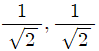
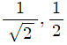
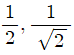
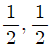
(정답률: 알수없음)
46. 복사전력밀도가 최대복사 방향의 1/2로 감소되는 값을 갖는 각도로 지향특성의 첨예도를 표시하는 것은?
- 전후방비
- 주엽(main lobe)
- 부엽(side lobe)
- 빔폭
(정답률: 알수없음)
47. 아래 안테나 중에서 직선 편파나 원형 편파가 가능하며 진팽파 안테나로 되는 것은?
- 야기(Yagi) 안테나
- 나선(Helical) 안테나
- 루프(Loop) 안테나
- 폴디드 다이폴(Flded dipole) 안테나
(정답률: 알수없음)
48. 위성 통신용으로 사용하는 마이크로파용 안테나로 적당하지 않은 것은?
- horn reflector antenna
- slot antenna
- parabola antenna
- cassegrain antenna
(정답률: 알수없음)
49. 파라볼라 안테나의 이득은? (단, A는 개구면적, η는 개구능률, λ는 파장이다.)
- 2πA/λ
- 4πA/λ2
- 4ηπA/λ2
- 2ηπA/λ2
(정답률: 알수없음)
50. 급전선의 필요 조건이 아닌 것은?
- 전송효율이 좋을 것
- 급전선의 파동 임피던스가 적당할 것
- 유도장해를 주거나 받지 않을 것
- 송신용일 때는 절연 내력이 적을 것
(정답률: 알수없음)
51. 방향탐지용 안테나로서 야간 오차를 경감하는데 사용하는 안테나는?
- 애드콕 안테나
- 비버리지 안테나
- 휩 안테나
- 야기 안테나
(정답률: 알수없음)
52. 초단파 통신에서 송ㆍ수신 안테나의 높이가 각각 36[m], 26[m]일 때 직접파의 가시거리는?
- 30.57[km]
- 45.61[km]
- 52.44[km]
- 57.14[km]
(정답률: 알수없음)
53. 안테나를 설계할 때 반시기를 붙이는 이유는?
- 임피던스 정합을 위해
- 광대역화를 위해
- 접지저항을 적게 하기 위해
- 단향성으로 만들기 위해
(정답률: 알수없음)
54. 제펠린 안테나는 어떤 경우에 많이 사용하는가?
- 급전선의 영향을 적게 할 때
- 임피던스 정합회로가 필요할 때
- 전류급전을 할 때
- 공간적으로 반파장 더블렛을 설치하기 곤란할 때
(정답률: 알수없음)
55. 특성 임피던스 Zo=100[Ω] 인 급전선에 부하 임피던스 Zl=200[Ω]을 접속했을 때의 반사계수는 얼마인가?
- 0
- 0.33
- 1
- 3
(정답률: 알수없음)
56. 지표파 전파의 특징 중 틀린 것은?
- 지면 도중의 凹, 凸에 별로 영향을 받지 않는다.
- 대지의 도전율이 클수록 멀리 도달한다.
- 주파수가 높을수록 멀리까지 전파한다.
- 수직편파가 잘 전파한다.
(정답률: 알수없음)
57. MUF(Maximum Usable Frquency)의 관계가 적은 것은?
- 송신전력
- 임계주파수
- 송, 수신점간의 거리
- 전리층의 높이
(정답률: 알수없음)
58. 델린저(Dellinger)현상의 특징이 아닌 것은?
- 야간에만 나타난다.
- 태양면의 폭발에 기인한다.
- 단파통신에 주로 영향을 준다.
- 주파수를 높게 선정하여 극복한다.
(정답률: 알수없음)
59. 마이크로파의 전송선로로서 도파관이 우수한 이유가 아닌 것은?
- 유전체 손실이 적다.
- 부하와의 정합상태가 불량하여도 정재파가 발생하지 않는다.
- 외부 전자계와 완전히 격리할 수 있다.
- 도체에 의한 저항손실이 적다.
(정답률: 알수없음)
60. 다음 중 공전(空電)의 특징이 아닌 것은?
- 주로 초단파 통신에 방해를 주며 200[kHz] 이하에서는 문제가 되지 않는다.
- 장파대의 공전은 겨울보다 여름에 자주 나타난다.
- 공전은 적도 부근에서 가장 격렬히 발생한다.
- 단파대에서는 한밤 중 전후에 최대이고 정오경에 최소가 된다.
(정답률: 알수없음)
4과목: 무선통신 시스템
61. 전파 잡음은 인공 잡음과 자연 잡음으로 분류된다. 다음 중 자연 잡음이 아닌 것은?
- 태양 잡음
- 은하 잡음
- 공전 잡음
- GLOW 방전 잡음
(정답률: 알수없음)
62. 다음 중 주파수편이방식(FS)의 가장 큰 결점인 것은?
- 입력레벨 변동에 의해 바이어스 디스토션의 발생
- 특성 디스토션의 발생
- 잡음에 의한 불규칙 디스토션의 발생
- 반송파 주파수 변동에 의한 바이어스 디스토션의 증가
(정답률: 알수없음)
63. 위성통신의 다원접속방식 중 간섭 및 방해에 가장 강한 방식은?
- 주파수 분할 다원접속(FDMA)
- 시분할 다원접속(TDMA)
- 코드분할 다원접속(CDMA)
- 임의 접속방식(RDMA)
(정답률: 알수없음)
64. 수신기의 통과대역폭(B), 절대온도(T), 볼츠만 상수(K), 잡음전력(P)의 관계식으로 적합한 것은?
- P=KBT
- P=K2BT
- P=KB2T
- P=KBT2
(정답률: 알수없음)
65. 이동통신에서는 이동하는 가입자에 관한 정보를 아는 것이 매우 중요한데 이동국이 자신의 위치를 기지국에 알리는 것을 의미하는 것은?
- 위치등록
- 인증
- 핸드오프
- 핸드온
(정답률: 알수없음)
66. 정지위성을 사용한 위성 통신의 특징이라고 볼 수 없는 것은?
- 안정하고 대용량 통신이 가능하다.
- 설치비와 보수비가 통신거리와는 관계가 없다.
- 다원접속이 가능하다.
- 전파지연시간이 없다.
(정답률: 알수없음)
67. Micro파대의 송신장치에서 주파수 체배에 주로 많이 사용되는 것은?
- Diode Thytistor
- TR Converter
- Tube Converter
- Varactor diode
(정답률: 알수없음)
68. 발진회로를 설계할 때 가장 중요시하여야 할 사항은?
- 충실도
- 안정도
- 선택도
- 증폭도
(정답률: 알수없음)
69. 이동통신시스템에서 가장 흔히 쓰이는 안테나 종류는?
- 롬빅(Rhombic) 안테나
- 카세그레인(Cassegrain) 안테나
- 그레고리언(Gregorian) 안테나
- 전방향성(Omnidirectional) 안테나
(정답률: 알수없음)
70. 통신위성의 종류로서 위성통신업무에 따른 구분이 아닌 것은?
- 방송위성
- 기상위성
- 해사위성
- 위상위성
(정답률: 알수없음)
71. 이동통신 방식에서 대 Zone방식과 비교하여 소 Zone방식의 장점이 아닌것은?
- 주파수 이용효율이 높다.
- 서비스 지역을 자유롭게 설정할 수 있다.
- 무선회선의 제어가 간단하다.
- 이동국 송신기 출력을 작게 할 수 있다.
(정답률: 알수없음)
72. GPS(Global positioning system)에 관한 설명으로 맞는 것은?
- 인공위성에서 발사된 전파를 수신해 자기 자신의 위치를 정확하게 감지하는 시스템
- 기지국으로부터 발사된 전파를 수신해 자기 자신의 위치를 정확하게 감지하는 시스템
- 해상이나 육상의 측위국으로부터 발사된 전파를 수신해 자기 자신의 위치를 결정하는 시스템
- 항공기로부터 발사된 전파를 수신해 육상이나 해상 이동국의 위치를 결정하는 시스템
(정답률: 알수없음)
73. 이동통신 시스템의 구성에서 존(zone)이란 무엇인가?
- 한 무선교환국이 수용할 수 있는 트래픽 범위지역
- 한 무선기지국이 담당하는 범위인 무선통신구역
- 이동통신 시스템이 제공할 수 있는 전체 서비스 영역
- 자동차 전화 시스템망이 일반전화망으로 제공할 수 있는 구역
(정답률: 알수없음)
74. 3단 증폭기에서 초단의 잡음지수 F1=5, 이득 G1=5이고 다음 단이 잡음지수 F2=6, G2=3이며, 그 다음 단의 잡음지수가 F3=16일 때 이 증폭기의 종합 잡음지수는?
- 5
- 7
- 9
- 11
(정답률: 알수없음)
75. SSB 통신 방식에 대한 설명으로 관계가 없는 것은?
- 선택성 페이딩의 영향이 적다.
- 링변조로 반송파를 제거한다.
- 링변조기를 역으로 사용하면 복조기로 사용할 수 있다.
- 송신 발사전파는 상ㆍ하측파대를 모두 내포하고 있다.
(정답률: 알수없음)
76. 국제 통신위성(INTELSAT)에 관한 설명으로 적합하지 않은 것은?
- 적도상공 약 36,000[km]의 높이에 위치해 있다.
- 다원 접속방식을 적용한다.
- 위성에서 온 전파는 중간주파수(70[MHz]) 로 변환하여 증폭한다.
- 정지 위성으로 상용통신위성이다.
(정답률: 알수없음)
77. 마이크로파에서 X밴드와 S밴드의 비교 설명으로 틀린 것은?
- 비, 눈, 안개의 영향은 높은 밴드일수록 크다.
- 예민한 지향성을 얻기 위해서는 X밴드를 사용한다.
- 원거리 통신에는 S밴드를 사용한다.
- 안테나가 작을 경우에는 S밴드를 사용한다.
(정답률: 알수없음)
78. 다음 중 전송로 등에 의한 레벨변동의 영향을 적게 받으며 타이밍(timing) 정보 및 주파수 정보를 포함하고 있어 지상의 디지털 회선뿐만 아니라 위성통신 회선에서도 쓰이는 변조방식은?
- ASK
- FSK
- PSK
- PCM
(정답률: 알수없음)
79. 장파용 무선시스템에서 지표파의 전계강도가 가장 큰 곳은?
- 해상
- 평야
- 산악
- 시가지
(정답률: 알수없음)
80. 개별 및 그룹통화가 가장 용이한 통신방식은?
- PCS
- CT-2
- TRS
- WLL
(정답률: 알수없음)
5과목: 전자계산기 일반 및 무선설비기준
81. 다음 중 어드레싱(addressing) 방버이 아닌 것은?
- 직접 어드레싱(direct addressing)
- 즉시 어드레싱(immediate addressing)
- 간접 어드레싱(indirect addressing)
- 임시 어드레싱(temporary addressing)
(정답률: 알수없음)
82. 전자계산기에서 보수(Complement Number)를 쓰는 이유는?
- 음의 소수를 나타내기 위하여
- 소수의 표현이 가능하도록 하기 위하여
- 복소수의 허수부분을 표현하기 위하여
- 가산기에 의해 뺄셈을 할 수 있도록 하기 위하여
(정답률: 알수없음)
83. 다음 명령어와 관계가 있는 것은?
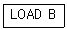
- 0-주소 명령어
- 1-주소 명령어
- 2-주소 명령어
- 3-주소 명령어
(정답률: 알수없음)
84. 데이터를 표현할 때 가장 적은 비트의 수를 필요로 하는 것은?
- real type
- integer type
- character type
- boolean type
(정답률: 알수없음)
85. 다음은 중앙처리장치 내의 하드웨어 요소와 그 기능을 짝지은 것이다. 서로 맞지 않는 것은?
- Register-기억기능
- Accumulator-제어기능
- ALU-연산기능
- Internal bus-전달기능
(정답률: 알수없음)
86. 기억장치의 계층에서 가장 속도가 빠른 것은?
- 자기기억장치
- 보조기억장치
- 캐시기억장치
- 코어기억장치
(정답률: 알수없음)
87. 수치 연산 결과가 (11000011)2로 나타나는 2진수의 연산식은?
- 1100+0011
- 1111×1001
- 1111×1101
- 1111/1011
(정답률: 알수없음)
88. DMA(Direct Memory Access)에 관한 설명 중 틀린 것은?
- 주변장치와 기억 장치 등의 대용량 데이터 전송에 적합하다.
- 프로그램방식보다 시스템의 효율이 좋다.
- 프로그램방식보다 데이터의 전송속도가 느리다.
- CPU를 경우하지 않고 메모리와 입출력 주변 장치 사이에 직접 데이터 전송을 한다.
(정답률: 알수없음)
89. 일괄처리 시스템에서 사용자의 자료를 시스템에 보낸 시점부터 시스템에서 데이터가 처리되어 그 결과가 사요자에게 전달될 때까지의 시간을 무엇이라 하는가?
- Time Slice
- Processing Time
- Turn-around Time
- Throughput Time
(정답률: 알수없음)
90. CPU와 주변 장치의 인터페이스에서 일기. 쓰기, 인터럽트 요청 등에 사용하는 버스는?
- 입출력 벗,
- 주소 버스
- 데이터 버스
- 제어 버스
(정답률: 알수없음)
91. 실험국 및 아마추어국의 통신에 대하여 맞는 것은?
- 실험국은 외국의 실험국과 통신할 수 있다.
- 실험국과 아마추어국은 암어를 사용할 수 없다.
- 아마추어국은 제3자를 위한 통신을 할 수 없다.
- 아마추어국은 유무선간의 중계통신을 할 수 없다.
(정답률: 알수없음)
92. 전기통신기본법, 전파법의 규정에 의하여 인증이 면제되는 정보통신기기가 아닌 것은?
- 시험ㆍ연구를 위하여 제조하거나 수입하는 인증대상 정보통신기기
- 국내에서 판매하고 수입전용으로 제조하는 인증대상 정보통신기기
- 여행자가 판매를 목적으로 하지 아니하고 자신이 사용하기 위하여 반입하는 형식승인 또는 전자파 적합등록 대상기기
- 전자파 적합 등록을 한 주컴퓨터시스템의 유지ㆍ보수를 위하여 수입하는 전자파 적합 등록 대상기기의 구성품
(정답률: 알수없음)
93. 수신설비로부터 부차적으로 발사되는 전파의 세기는 수신 공중선과 전기적 상수가 같은 의사공중선회로(擬似空中線回路)를 사용하여 측정한 경우에 얼마이하이여야 하는가?
- -54데시벨밀리와트(dBmW) 이하
- +54데시벨밀리와트(dBmW) 이하
- -100데시벨밀리와트(dBmW) 이하
- +100데시벨밀리와트(dBmW) 이하
(정답률: 알수없음)
94. 전파법에 의해 주파수대가를 지불하고 할당받은 주파수 이용권에 대한 설명으로 틀린 것은?
- 당해 주파수를 배타적으로 이용할 수 있다.
- 대통령령이 정하는 기간 이후에는 주파수 이용권을 양도할 수 잇다.
- 주파수 이용권의 양수에 대해 승인을 받은 자는 주파수 할당을 받은 자 및 시설자의 지위를 승계한다.
- 주파수이용권을 양수받은 자는 무선국 개설의 결격사유에 적용받지 아니한다.
(정답률: 알수없음)
95. 전파연구소장은 특별한 사유가 없는 한 전자파적합등록 신청서를 받은 날부터 며칠 이내에 처리하여야 하는가?
- 3일
- 5일
- 10일
- 25일
(정답률: 알수없음)
96. 전파형식 JsE의 공중선전력 표시방법으로 맞은 것은?
- 규격전력
- 첨두포락선전력
- 평균전력
- 반송파전력
(정답률: 알수없음)
97. 주파수 허용편차에 대하여 올바르게 설명한 것은?
- 일반적으로 백분율로 표시한다.
- 전파를 발사하는 발사전력의 99%를 포함하는 주파수
- 주어진 발사에서 용이하게 식별되고 측정할 수 있는 주파수
- 발사에 의하여 점유하는 주파수대의 중앙주파수와 지정주파수 사이에서 허용 될 수 있는 최대 편차
(정답률: 알수없음)
98. 무선설비의 운용을 위한 전원의 전압변동률은 정격전압의 몇% 이내로 유지하여야 하는가?
- ±1%
- ±5%
- ±10%
- ±15%
(정답률: 알수없음)
99. 무선국 시설자 및 무선설비를 이용하는 자가 통신보안에 관한 사항을 준수하지 아니한 경우에 해당하는 전파법상의 벌칙은?
- 1년 이하의 징역
- 100만원 이하의 벌금
- 300만원 이하의 벌금
- 200만원 이하의 과태료
(정답률: 알수없음)
100. F3E 텔레비전 방송을 하는 방송국 무선설비의 점유주파수 대역폭의 허용 오차는?
- 6[kHz]
- 60[kHz]
- 600[kHz]
- 6,000[kHz]
(정답률: 알수없음)